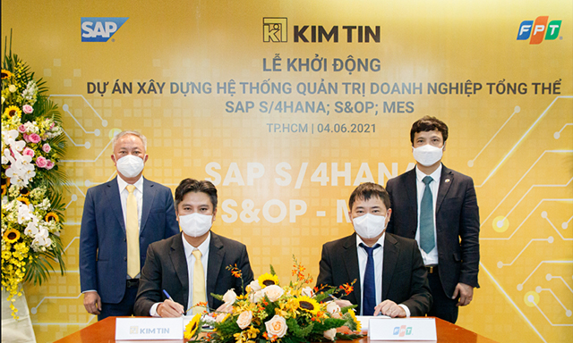

SAP S/4HANA Implementation — Kim Tin Group
Phase 2 of a USD 5 million digital transformation. Custom MM/WM reports and modules for material management, goods movement and warehouse operations, plus PI/PO integration with a third-party warehouse system.

What I delivered
- Developed custom SAP MM/WM reports and modules for material management, goods movement and detailed warehouse operations, using ABAP OO with User Exits and BAdIs for complex business logic.
- Designed and developed API integrations between SAP and a detailed warehouse management application via SAP PI/PO, ensuring reliable data exchange.
Context
Kim Tin Group is one of Vietnam's larger manufacturers in welding materials and wood-based panels. The group committed roughly USD 5 million to a full digital transformation, with SAP S/4HANA at the centre. I joined for Phase 2, three weeks into my first job.
My scope
Material management and goods movement. Custom reports covering stock position, movement history and reconciliation, in a business where the same material can be measured in several units and moved between plants constantly.
Detailed warehouse operations. The standard WM view of a warehouse and the way this warehouse actually ran were not the same shape. A set of custom modules closed that gap — bin-level detail, operator assignment, and movement confirmation that matched how the floor worked.
Integration with the warehouse application. The client already ran a dedicated warehouse management application. It needed to exchange data with SAP reliably and in near real time. I designed and built the interfaces through SAP PI/PO.
The hard part
Not the ABAP. The hard part was that the warehouse application and SAP disagreed about what a "movement" was — different granularity, different timing, different identifiers. Mapping between them meant sitting with the warehouse supervisors until I understood their model well enough to translate it, rather than just accepting the field mapping in the interface spec.
The second hard part was error handling. An interface that works is easy; an interface that fails visibly and recoverably at 2 a.m. is the actual requirement. We ended up with a monitoring table and a reprocessing report, which nobody asked for in the spec and everybody used.
Result
Phase 2 went live on schedule. This project is where I learned the enhancement toolkit properly — User Exits and BAdIs, when to reach for each, and the discipline of keeping custom logic out of standard code paths wherever a proper extension point exists.
To expand: specific report list, the PI/PO interface architecture diagram, and the reprocessing design.
Want the detail behind this?
Happy to walk through the technical decisions in a conversation.